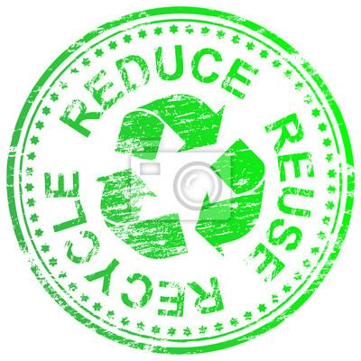

小朋友都知道，垃圾不能随手乱丢，要丢进垃圾桶。然而垃圾桶并不是垃圾生命的终结，你是否想过垃圾被丢进垃圾桶后，最终会去哪里，会被怎样处理？
人类对于生活舒适度的无限向往和努力创造，致使伴随而来的生活垃圾在源源不断地产生。为避免地球被垃圾堆满，我们需要行之有效的处理垃圾的方式，让每天产生的不计其数的垃圾不污染我们的生活环境，不占据我们的生存空间。然而，现行的处理垃圾的方式依然很原始：只有（1）填埋或者（2）焚烧。
填埋
填埋方式并未真正对垃圾进行处理，而仅是将垃圾以对土壤尽量减少污染的方式填埋起来，使其“眼不见心不烦”。
焚烧
焚烧可以将垃圾体积有效减小，是相较焚烧方式而言的一个真正对垃圾进行处理的方式。为避免焚烧过程产生的烟气污染空气，现代化的垃圾焚烧厂需安装烟气处理装置并用科学的方法使用。垃圾焚烧过程可以进行火力发电，一定限度使处理废物的过程生成资源。
然而，建设现代化的垃圾焚烧厂需要时间，并且垃圾焚烧厂的烟气处理因各种原因也常常引发争议。垃圾焚烧依然不能算是垃圾处理的最理想的方式。
探究最理想的垃圾处理方式是什么，我们应回头探究一下到底什么是垃圾。
什么是垃圾？
垃圾是不被需要或无用的固体、流体物质。换句话说，垃圾只是被制造出来并满足人类的需求后而不再被需要的东西。大自然中是没有垃圾的，大自然中的每一样物质都在自然中循环往复。大自然没有垃圾，为什么人类会有？
在合理安排使用的理想情况下，每一种物质都可以是资源。“垃圾”在合理安排下，也可以都成为资源。
